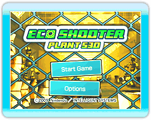

Select Eco Shooter: Plant 530 from your Wii Menu, then select Start to go to the title screen. Press

or

to display the main menu. Point at menu items, then confirm by pressing
or
.
 |
 |
 |
 |
About Saving
A message stating that save data is being created will appear prior to the title screen when you start this game for the first time. Point at OK, then confirm by pressing or .
One empty block is necessary to save your data. This game will automatically save your progress when you clear a stage or when you make changes in Options.
If you would like to erase saved data, please see the Wii Operations Manual.
Deleted data cannot be retrieved, so be careful.
*Only one save data will be saved.
|
Note:
Performing the actions below may result in your records not being saved or data being lost.
This data cannot be recovered, so please be careful!
-
Turning off the power or resetting the Wii console or Wii Remote controller while data is being saved.
-
Disconnecting the AC adapter from your Wii console while the game is being played.
|
|
 |
 |
 |
 |